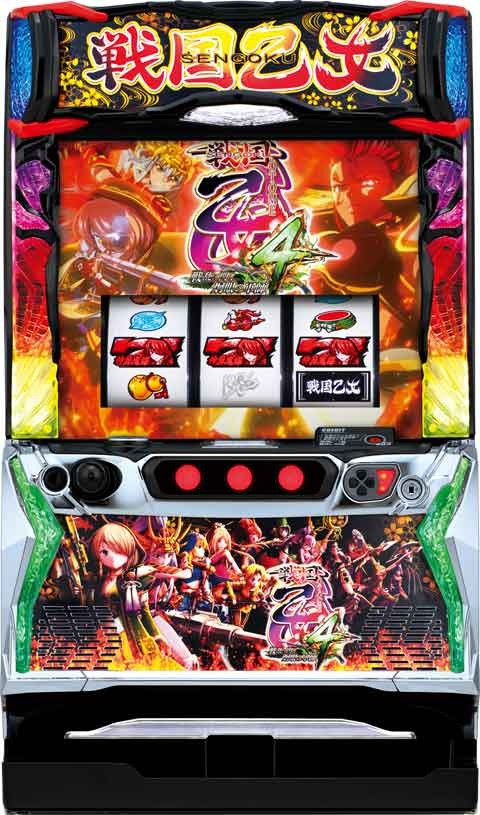

L戦国乙女4

[天井情報］
ボーナス間 799G+α
スルー回数天井 6スルー 7回目でエピボ
スルー回数は激カワrush直撃でリセットされない。
※激カワrush中にボーナス当選した場合は、スルー天井はリセットされる。
[リセット関連]
ガックン不明
当日、内部G数どちらで前兆発生するか不明
[有利区間］
エンディング到達や差枚プラスのAT終了時の一部で有利区間がリセットされ100G以内にボーナス当選かつ「超・強カワループ」に突入。
エンディング経由の超・強カワループ時は画面端にモヤが出現し見た目上で判別可能だが、差枚数プラスのAT終了時にも有利区間がリセットされる可能性がありその際は内部的に超・強カワループとなる。
有利区間切断条件 差枚+1900枚前後で有利区間切断。
狙い目
［天井狙い］
480Gから
【300のゾーン狙い】
280Gから
【スルー天井狙い】
AT6スルー7回目でエピボ確定。
・6スルー 不問
・5スルー 100Gから
4スルーから打ち出してモードb当選なら、そのままATまで打ち切り。
【ポイント狙い】
巫女ポイントは100pt以内
czは強いけど、
設定1は20%でしか入らないから結構渋い。
【有利区間切れ狙い】
差枚+1500枚以上 ボーナス当選まで
差枚+1200枚以上 天国ゾーンまたは300ゾーンまで
やめ時
エンディング後は強カワループに行くため天国確認。
［前回モードB］
天国フォロー？ 示唆弱ければやめ？
［前回モードA]
即やめ or
終了画面が5番目以上なら天国フォロー
［終了画面］
左から3番目から
モードB以上2/2確認
その他
ボーナス終了画面
{kind=link}
ゾーン
{kind=link}
参考元
ちょんぼりすた
基本情報
- メーカー: オリンピアエステート
- 機械割: 98.2% 〜 113.0%
- 導入開始日: 2023年09月04日（月）
- ゲーム性概要: ファン待望の乙女シリーズがスマスロで初登場。 基本的に戦国乙女ボーナスを経由してAT当選を目指す初代を意識したゲームフローで、伝統のCZ「乙女アタック」も搭載されている。 AT「強カワラッシュ」は純増約2.5枚/Gのゲーム数管理型。レア役でゲーム数上乗せ・ボーナス・ボーナス高確移行が抽選される。AT終了後に突入する「オウガイバトル」では、乙女が倒れなければゲーム数を上乗せしてATへ復帰。ボーナスをストックすることもある。 純増が約5枚/Gにアップした「真強カワラッシュ」、上乗せ特化ゾーンの「神謀覚醒」、ボーナスストックゾーンの「しゅつじんのとき」など、強力な出玉トリガーにも注目だ。


打ち方
打ち方・小役
打ち方（小役狙い）
「最初に狙う絵柄」 左リール上段付近にBARを狙う。

「チェリー停止時」
成立役…弱チェリー／強チェリー

「下段BAR停止時」
成立役…ハズレ／リプレイ／ベル／チャンス目

「スイカ停止時」
成立役…スイカ／チャンス目
中リールにBARを目安にを狙う。右リールにスイカのこぼしはないが、チャンス目（3枚）を取れる可能性があるので右リールもBAR狙いを推奨する。

「レア役の停止形」

AT中の打ち方
「基本は押し順ナビ通りに消化でOK」 押し順ナビ非発生時はレア役の可能性があるので、左リールBAR狙いで消化しよう。

「真強カワラッシュ中」 真強カワラッシュ中は第1停止のみ色ナビが発生する（真強カワラッシュ中の出陣ボーナス含む）。

変則押しはNG
通常時は左リール第1停止での消化を推奨する。

解析情報通常時
小役関連
［通常時］小役確率
| 役 | 確率 |
|---|---|
| リプレイ | 1/9.3 |
| 押し順ベル（3or13枚） | 1/2.0 |
| 押し順3枚役 | 1/7.6 |
| 共通ベル（3枚） | 1/4.4 |
| 弱チェリー | 1/97.2 |
| スイカ | 1/69.4 |
| チャンス目合算（0枚orリプレイor3枚） | 1/180.0 |
| 強チェリー | 1/319.7 |
| ヤマカン揃い役 | 1/399.6 |
小役確率は全設定共通。
リールロック発生時の抽選内容
| 段階 | 内容 |
|---|---|
| 1段階 | レア役濃厚 |
| 2段階 | ボーナス直撃抽選→非当選時は乙女アタック抽選 |
| 3段階 | ロングフリーズ |
［通常時］リールロック確率
| 段階 | 確率 |
|---|---|
| 1段階 | 1/315.6 |
| 2段階 | 1/2481.5 |
| 3段階 | 1/16384.0 |
| トータル | 1/275.3 |
発生した時点でレア役以上濃厚。3段階目到達でロングフリーズが確定する。
モード
通常モード概要
最初のモードは有利区間開始時に決まり、以降はボーナス終了時に次のモードが抽選され、ボーナス当選までの規定ゲーム数や天井を管理（1G連では移行しない）。 有利区間が切れない限り 通常時↔AT中でゲーム数を引き継ぐ ため、AT中にボーナス間でハマって終了した場合、通常時に戻ってすぐ天井に到達といったケースもある。
基本的にエンディング到達まで有利区間は切れないが、まれにエンディング非到達でも有利区間がリセットされる可能性がある。 設定変更後以外の有利区間リセット時は天国A以上への移行が確定 するが、ゲーム数表記はAT中を引き継ぐので、リセットを見た目で判別することはできない。
エンディング後は超強カワループ＋天国A以上 なので超強力だ。
モードの種類と特徴
| モード | 特徴 | 最大天井 |
|---|---|---|
| 通常A | 200G、300G、400G、600G台の 前半がチャンス | 799G＋α |
| 通常B | 100G、300G、500G台の前半がチャンス | 649G＋α |
| 通常C | 100G、200G台の前半がチャンス | 349G＋α |
| 特殊 | 次回天国Aor天国Bへ以降（割合は1:1） | 799G＋α |
| 天国A | ー | 99G＋α |
| 天国B | 天国Bが50%でループ。転落時は天国Aへ | 99G＋α |
※通常A＜通常B＜通常Cの順で天国へ移行しやすい
ゾーンごとのボーナス当選期待度
| ゲーム数 | 通常A | 通常B | 通常C | 特殊 | 天国A | 天国B |
|---|---|---|---|---|---|---|
| 1～49G | ー | ー | ー | ー | 〇 | ◎ |
| 50～99G | △ | △ | △ | △ | 天井 | 天井 |
| 100～149G | ー | 〇 | 〇 | ー | ||
| 150～199G | ー | ー | ー | ー | ||
| 200～249G | 〇 | ー | 〇 | 〇 | ||
| 250～299G | ー | ー | ー | ー | ||
| 300～349G | 〇 | ◎ | 天井 | 〇 | ||
| 350～399G | ー | ー | ー | |||
| 400～449G | 〇 | ー | 〇 | |||
| 450～499G | ー | ー | ー | |||
| 500～549G | ー | 〇 | ー | |||
| 550～599G | ー | ー | ー | |||
| 600～649G | 〇 | 天井 | 〇 | |||
| 650～699G | ー | ー | ||||
| 700～749G | ー | ー | ||||
| 750～799G | 天井 | 天井 |
※期待度△＜○＜◎
［ゲーム数はリール左に表示］

AT直撃モード（強カワ・超強カワループ）
「AT直撃モード概要」
規定ゲーム数を管理する通常モードとは別に、3種類のAT直撃モードが存在。滞在モードに応じて AT直撃確率やモードのループ率、AT当選時の真強カワラッシュ当選率 が変化する。
「直撃抽選の流れ」
AT直撃は2段階抽選となっていて、まずは毎ゲーム1段階目を抽選。 1段階目に当選したら、滞在モードを参照して2段階目の抽選でAT直撃 or 通常へ転落のいずれかに振り分けられる 。通常滞在時は1段階目当選＝AT直撃確定で、この確率に大きな設定差が存在。（超）強カワループ経由のAT直撃時は同じモードがループする。
AT直撃モードの種類と特徴
| モード | 特徴 |
|---|---|
| 通常 | 基本的に滞在するモード |
| 強カワループ | おもにAT後に滞在、AT期待度約10% |
| 超強カワループ | おもにエンディング後に移行 （通常時の一部でも移行） |
| 超強カワループ | ATループ期待度約70% |
| 超強カワループ | AT当選時の約25%で真強カワラッシュ |
通常滞在時・超強カワループ移行確率
| 設定 | 確率 |
|---|---|
| 全設定共通 | 1/65536.0 |
AT当選時・モード移行振り分け
| 移行先 | 振り分け |
|---|---|
| 通常 | ー |
| 強カワループ | 99.9% |
| 超強カワループ | 0.1% |
AT当選時・真強カワラッシュ当選率
| モード | 当選率 |
|---|---|
| 通常 | ー |
| 強カワループ | 0.1% |
| 超強カワループ | 25.0% |
滞在モード別・1段階目の当選確率
| 設定 | 通常 | 強カワループ | 超強カワループ |
|---|---|---|---|
| 1 | 1/10922.7 | 1/10.2 | 1/14.9 |
| 2 | 1/9362.3 | 1/10.2 | 1/14.9 |
| 3 | 1/8192.0 | 1/10.2 | 1/14.9 |
| 4 | 1/6553.6 | 1/10.2 | 1/14.9 |
| 5 | 1/5957.8 | 1/10.2 | 1/14.9 |
| 6 | 1/5461.3 | 1/10.2 | 1/14.9 |
1段階目当選後（2段階目）のAT直撃当選率
| モード | 当選率 |
|---|---|
| 通常 | 100% |
| 強カワループ | 10.2% |
| 超強カワループ | 70.3% |
※AT非当選時はループ終了となり、通常へ転落
前兆
前兆ゲーム数
CZ本前兆とボーナス本前兆が重なった場合、短い前兆ゲーム数が選択された方から放出される。
前兆の最大ゲーム数
| 前兆 | 最大前兆 |
|---|---|
| フェイク前兆 | 15G |
| 本前兆 | 16G |
※巫女ポイント契機とレア役契機の前兆ゲーム数は同一
巫女カウンター（周期抽選）
周期抽選概要
リール右側に表示された巫女カウンター（999ptからスタート）は、毎ゲーム最低1ずつ減算。レア役などで一気に減算することもあり、0になるとCZを抽選する。

巫女カウンター性能
| 項目 | 内容 |
|---|---|
| 0pt到達までの平均ゲーム数 | 約110G |
| ポイント減算契機 | 毎ゲームの成立役（最低1pt） |
| 0pt到達時の抽選 | 乙女アタック |
巫女ポイント減算抽選
強チェリー（リールロック2段階非経由）とリールロック2段階は999pt減算が確定するうえ、別途戦国乙女ボーナスや乙女アタックの直撃を抽選する。
成立役別・減算巫女ポイント振り分け
| ポイント | ハズレ／ベル | リプレイ | 弱チェリー／スイカ | |
|---|---|---|---|---|
| 1pt | 87.5% | ー | ー | |
| 5pt | 12.5% | ー | ー | |
| 10pt | ー | 87.5% | ー | |
| 50pt | ー | 12.5% | 67.2% | |
| 100pt | ー | ー | 25.0% | |
| 200pt | ー | ー | 6.3% | |
| 500pt | ー | ー | 1.2% | |
| 999pt | ー | ー | 0.4% | |
| ポイント | チャンス目 | 強チェリー／リールロック2段階 | ||
| 1pt | ー | ー | ||
| 5pt | ー | ー | ||
| 10pt | ー | ー | ||
| 50pt | ー | ー | ||
| 100pt | ー | ー | ||
| 200pt | 79.3% | ー | ||
| 500pt | 20.3% | ー | ||
| 999pt | 0.4% | 100% |
CZ／乙女アタック
乙女アタック概要
シリーズおなじみのチャンスゾーン。味方乙女が勝利すればボーナスをストックする。

乙女アタック性能
| 項目 | 内容 |
|---|---|
| 突入契機 | 周期抽選（巫女カウンター）、 強レア役・リールロック2段階時の抽選 |
| 継続ゲーム数 | 20G（2Gのバトル×10回） |
| ボーナス期待度 | 52.0% |
| 消化中の抽選 | バトル勝利のたびにボーナスをストック |
| 消化中の抽選 | 3・７・9人目勝利でエピソードボーナス濃厚 |
対戦相手の期待度序列
| 対戦相手 | 序列 |
|---|---|
| オウガイ | 低 |
| ムラサメ | ↓ |
| コタロウ | ↓ |
| 昇格コタロウ | 高 |
| シロ | 確定 |
乙女アタック確率
| 設定 | 確率 |
|---|---|
| 1 | 1/467.6 |
| 2 | 1/452.2 |
| 3 | 1/434.7 |
| 4 | 1/410.9 |
| 5 | 1/394.9 |
| 6 | 1/381.5 |
「勝利した人数分ボーナスをストック」

「強キャラでの勝利はエピソードボーナス」 勝利時に表示される○は赤が基本で、虹ならエピソードボーナス（AT当選）濃厚。3・7・9人目の乙女で勝利すると虹の○になる!?

「きゅいんアタック」 乙女アタック突入画面でPUSHボタンを押すと、演出がきゅいんアタックに変化。パトランプが光った数だけボーナスをストックする。

プレミアム乙女アタック


対戦相手がすべてコタロウ or シロなので、複数ストックの期待大となる乙女アタックの上位版。期待枚数は 約2591.3枚（設定1） と超強力だ。
乙女アタック失敗時に戦国八陣 “プレミアム乙女アタックの陣” が発生すると、プレミアム乙女アタックへ突入する。
プレミアム乙女アタックの陣発生確率
| 契機 | 確率 |
|---|---|
| 乙女アタック失敗時 | 1/256.0 |
対戦相手振り分け
対峙画面の成立役を参照して、コタロウへの昇格を抽選。昇格コタロウは通常のコタロウに比べて大幅に勝利期待度が高い。シロは選択された時点で勝利確定のプレミアムキャラだ。
対戦相手トータル出現割合
| 対戦相手 | 乙女アタック | プレミアム乙女アタック |
|---|---|---|
| オウガイ | 58.9% | ー |
| ムラサメ | 31.4% | ー |
| コタロウ | 7.6% | 68.8% |
| 昇格コタロウ | 1.6% | 24.8% |
| シロ | 0.5% | 6.4% |
［乙女アタック］成立役別・対戦相手振り分け
| 対戦相手 | その他 | 弱チェリー ／スイカ | チャンス目 | 強チェリー |
|---|---|---|---|---|
| オウガイ | 60.9% | ー | ー | ー |
| ムラサメ | 31.3% | 50.0% | ー | ー |
| コタロウ | 6.3% | 38.7% | 72.7% | 61.7% |
| 昇格コタロウ | 1.2% | 10.2% | 25.0% | 33.2% |
| シロ | 0.4% | 1.2% | 2.3% | 5.1% |
※リールロック2段階はシロ確定
［プレミアム乙女アタック］成立役別・対戦相手振り分け
| 対戦相手 | その他 | 弱チェリー ／スイカ | チャンス目 | 強チェリー |
|---|---|---|---|---|
| オウガイ | ー | ー | ー | ー |
| ムラサメ | ー | ー | ー | ー |
| コタロウ | 69.9% | 50.0% | ー | ー |
| 昇格コタロウ | 25.0% | 25.0% | ー | ー |
| シロ | 5.1% | 25.0% | 100% | 100% |
※リールロック2段階はシロ確定
勝利抽選
シロは勝利確定。シロとのバトル中はボーナスストックを抽選していて、ストック当選率はVSオウガイの勝利期待度と共通の数値。 プレミアムアタックは全敗しても保証としてストックを1個獲得するので、実質戦国乙女ボーナス以上確定。複数ストックした場合、AT当選後に残ったストック分は勝利したキャラor強キャラの出陣ボーナスになる。
トータル勝利期待度
| 対戦相手 | 期待度 |
|---|---|
| オウガイ | 0.9% |
| ムラサメ | 5.5% |
| コタロウ | 42.2% |
| 昇格コタロウ | 71.3% |
| シロ | 100% |
成立役別・勝利期待度
| 役 | オウガイ | ムラサメ | コタロウ | 昇格 コタロウ |
|---|---|---|---|---|
| その他 | 0.4% | 4.7% | 40.2% | 70.3% |
| 弱チェリー／スイカ | 1.2% | 12.5% | 100% | 100% |
| チャンス目 | 50.0% | 66.4% | 100% | 100% |
| 強チェリー | 66.4% | 80.1% | 100% | 100% |
| リールロック2段階 | 100% | 100% | 100% | 100% |
戦国八陣
戦国八陣概要
さまざまなタイミングで発生する可能性がある激アツ演出で、ボーナスやAT直撃、乙女アタック失敗時ならプレミアム乙女アタックなど、発生時の状況に応じた恩恵を獲得できる。


CZ・AT当選率
レア役・リールロック契機のボーナス直撃＆乙女アタック当選率
通常時はリールロック2段階時に50%で戦国乙女ボーナス直撃を抽選。リールロック2段階でボーナス非当選だった場合は50%で乙女アタックに当選する。 また、当選率は低いがリールロック2段階非経由の強レアでも乙女アタックが抽選される。
リールロック2段階・ボーナス直撃当選率
| 契機 | 当選率 |
|---|---|
| リールロック2段階 | 50.0% |
乙女アタック直撃当選率
※チャンス目・強チェリーはリールロック2段階非経由
リールロック2段階は乙女アタック以上期待度75%。
直撃抽選
通常時・AT直撃確率
※（超）強カワループ滞在中は直撃確率が大幅にアップする
高設定ほどAT直撃が発生しやすい。
演出動画
ロングフリーズ
リールロック3段階目到達でロングフリーズ確定。強力特化ゾーンの神謀覚醒へ突入する！
フリーズ
ロングフリーズ
リールロック3段階目到達でロングフリーズが発生。AT＋神謀覚醒が確定する。期待枚数は 1840.3枚 （設定1）。


解析情報ボーナス時
戦国乙女ボーナス／エピソードボーナス
戦国乙女ボーナス概要
初当りのメインとなる擬似ボーナス。消化中は全役でATを抽選していて、選択した告知タイプごとの演出でATの当否を告知する。

戦国乙女ボーナス性能
| 項目 | 内容 |
|---|---|
| 当選契機 | 乙女アタック、ゲーム数消化、リールロック 2 段階 |
| 1Gあたりの純増 | 約2.5枚 |
| 継続ゲーム数 | 30～50G |
| 消化中の抽選 | AT抽選 （当選後はオウガイバトル初戦勝利ストック抽選） |
ボーナス中・AT期待度序列
| 役 | 序列 |
|---|---|
| ハズレ／ベル／リプレイ | 低 |
| 弱チェリー／スイカ | ↓ |
| チャンス目 | ↓ |
| 強チェリー | 高 |
戦国乙女ボーナス・AT当選期待度
| 設定 | 期待度 |
|---|---|
| 1 | 40.0% |
| 2 | 40.0% |
| 3 | 40.1% |
| 4 | 40.3% |
| 5 | 40.4% |
| 6 | 40.8% |
「告知タイプ選択」 ボーナス開始時に好きなタイプを選択可能。PUSHボタンを長押しすると裏モードも選択できる。

［チャンス告知］ 狙えカットイン発生時にカンスケが揃えばAT！

［完全告知］ パトランプが光ればAT！

［最終告知］ アップルパイの材料を集めて、ラストで上手に焼ければAT！

［裏モード］ 任意のタイミングでPUSHボタンを押すと、ATに当選していれば告知が発生。PUSHボタンを押さなかった場合、ボーナス最終ゲームで告知される。

エピソードボーナス概要
初当り時の一部で突入する、AT確定のボーナス（30G）。ヨシテルのエピソードなら真強カワラッシュに突入する。


エピソードボーナス当選契機
| No. | 契機 |
|---|---|
| 1 | 戦国乙女ボーナス当選時の一部 |
| 2 | AT非当選の戦国乙女ボーナス7連続目 |
| 3 | ボーナス準備中の昇格 |
| 4 | 乙女アタックの3or7or9人目で勝利 |
| 5 | ボーナス当選時に葵の陣発動時 |
| 6 | ボーナス本前兆とAT本前兆に同時に滞在かつ、 ボーナス本前兆が先に終わる場合 |
ボーナス準備中の抽選
戦国乙女ボーナス準備中のレア役成立時は、 ボーナスゲーム数昇格 or エピソードボーナスへの昇格 を、エピソードボーナス準備中はレア役で オウガイバトルの勝利ストック を抽選する。

戦国乙女ボーナス準備中・昇格率
| 役 | ボーナス 30G以上 | ボーナス 40G以上 | エピソード ボーナス |
|---|---|---|---|
| 下記以外 | 99.2% | 0.4% | 0.4% |
| チャンス目 | 93.8% | 5.1% | 1.2% |
| 強チェリー | 69.9% | 25.0% | 5.1% |
ボーナス40G以上当選時・ボーナスゲーム数振り分け
| ゲーム数 | 振り分け |
|---|---|
| 30G | ー |
| 40G | 50.0% |
| 50G | 50.0% |
エピソードボーナス準備中・オウガイバトルストック当選率
| 役 | 当選率 |
|---|---|
| 弱チェリー／スイカ | 0.8% |
| チャンス目 | 9.8% |
| 強チェリー | 29.7% |
ボーナス中のAT＆勝利ストック抽選
戦国乙女ボーナス中は全役でATを抽選していて、当選後はオウガイバトルの勝利ストックを抽選する（エピソードボーナス中も同じ抽選）。 AT当選時の一部でオウガイバトルの勝利ストックを獲得することもあり、この場合はダブルヤマカン揃いで告知される。
戦国乙女ボーナス中・AT当選率
| 役 | 当選率 |
|---|---|
| その他 | 1.0% |
| 弱チェリー／スイカ | 12.9% |
| チャンス目 | 33.4% |
| 強チェリー | 55.1% |
AT当選後＆エピソードボーナス中 オウガイバトル勝利ストック当選率
| 役 | 当選率 |
|---|---|
| その他 | 0.1% |
| 弱チェリー／スイカ | 5.0% |
| チャンス目 | 33.4% |
| 強チェリー | 55.1% |
ヨシテルエピソード抽選
葵の陣発動演出を経由してボーナスが告知された場合、エピソードボーナス確定。さらにヨシテルエピソードボーナスのチャンスとなる。
葵の陣発動時・エピソードボーナス振り分け
| エピソード | 振り分け |
|---|---|
| ヨシテル以外 | 91.0% |
| ヨシテル | 9.0% |
逆転の陣抽選
AT非当選の戦国乙女ボーナス終了時に、戦国八陣“逆転の陣”が発生すればAT確定だ。
逆転の陣発生確率
| 契機 | 確率 |
|---|---|
| AT非当選時 | 1/256.0 |
［逆転の陣］

AT／強カワラッシュ
強カワラッシュ概要
ゲーム数管理型のAT。レア役による直乗せやレア役・ゲーム数消化によるボーナスなどでゲーム数を上乗せしつつ、ロング継続を目指すゲーム性となっている。

強カワラッシュ性能
| 項目 | 内容 |
|---|---|
| 1Gあたりの純増 | 約2.5枚 |
| 継続ゲーム数 | 初回は50G＋α |
| 継続ゲーム数 | 2セット目以降は30G＋α （オウガイバトルで決定） |
| 消化中の抽選 | ATゲーム数上乗せ、ボーナス高確、出陣ボーナス |
| 消化中の抽選 | 1契機の最大上乗せは200G |
ゲーム数上乗せ期待度序列
| 役 | 序列 |
|---|---|
| スイカ | 低 |
| 弱チェリー | 高 |
| チャンス目 | 確定 |
| 強チェリー | 確定 |
| リールロック2段階 | 確定 |
上乗せゲーム数の序列
| 役 | 序列 |
|---|---|
| 弱チェリー | 低 |
| チャンス目 | ↓ |
| 強チェリー | ↓ |
| スイカ | ↓ |
| リールロック2段階 | 高 |
ボーナス高確

押し順3枚ベル3連続やレア役成立時にボーナス高確へ移行する可能性あり。リール枠発光中はボーナス高確濃厚で、出陣ボーナス当選期待度がアップする。 真強カワラッシュ中は押し順3枚ベルの代わりに、押し順ベルの1/2が押し順3枚ベルとして抽選され、この抽選に3連続で当選した場合にボーナス高確移行が抽選される。
ボーナス高確性能
| 項目 | 内容 |
|---|---|
| 移行契機 | 押し順3枚ベル3連続時、レア役成立時の抽選 |
| 継続ゲーム数 | 13G固定 |
| 継続ゲーム数 | 高確中に高確に当選した場合、13Gを再セット |
ボーナス高確移行率
| 役 | 移行率 |
|---|---|
| 押し順3枚ベル3連 | 3.1% |
| 弱チェリー | 1.2% |
| スイカ | 25.0% |
| チャンス目 | 100% |
| 強チェリー | 100% |
| リールロック2段階→チャンス目 | 100% |
| リールロック2段階→強チェリー | 100% |
ヤマカンチャンス
AT中にいきなり発生する、4択の押し順チャレンジ。BARが揃えば出陣ボーナスが確定。BARテンパイ音がいつもと違えばBAR揃い確定だ。


AT開始時の抽選
「セットストック抽選」
AT開始時に複数ストックを獲得する可能性あり。AT準備中もストック抽選がおこなわれる。
「50G以内のボーナス当選」
AT初当り時の約14%で、50G以内にボーナスに当選する（モード不問）。
AT中・ゲーム数上乗せ当選率
| 役 | 当選率 |
|---|---|
| 弱チェリー | 20.2% |
| スイカ | 4.6% |
| チャンス目 | 100% |
| 強チェリー | 100% |
| リールロック2段階→チャンス目 | 100% |
| リールロック2段階→強チェリー | 100% |
AT中・ゲーム数上乗せ当選時の上乗せ振り分け
| 上乗せ | 弱チェリー | スイカ | チャンス目 |
|---|---|---|---|
| ＋10G | 90.2% | ー | 90.2% |
| ＋20G | 4.7% | ー | 4.7% |
| ＋30G | 2.3% | 82.4% | 2.3% |
| ＋50G | 1.6% | 16.0% | 1.6% |
| ＋100G | 0.4% | 0.8% | 0.4% |
| ＋150G | 0.4% | 0.4% | 0.4% |
| ＋200G | 0.4% | 0.4% | 0.4% |
| 上乗せ | 強チェリー | リールロック2段階 →チャンス目 | リールロック2段階 →強チェリー |
| ＋10G | ー | ー | ー |
| ＋20G | 72.7% | ー | ー |
| ＋30G | 24.6% | 82.4% | ー |
| ＋50G | 1.6% | 16.0% | 83.2% |
| ＋100G | 0.4% | 0.8% | 14.5% |
| ＋150G | 0.4% | 0.4% | 1.6% |
| ＋200G | 0.4% | 0.4% | 0.8% |
第3停止フリーズ確率＆平均上乗せゲーム数
| 項目 | 数値 |
|---|---|
| 確率 | 1/7341.2 |
| 平均上乗せ | 116.4G |
第3停止フリーズ発生時・上乗せゲーム数振り分け
| 上乗せ | 振り分け |
|---|---|
| ＋100G | 77.3% |
| ＋150G | 12.5% |
| ＋200G | 10.2% |
レア役、3枚役（共通ベル・押し順3枚役）の一部で第3停止フリーズが発生。発生した時点で100G以上の上乗せが確定する。
出陣ボーナス当選率
| 役 | ボーナス高確以外 | ボーナス高確中 |
|---|---|---|
| 弱チェリー | 調査中 | 10.0% |
| スイカ | 調査中 | 10.0% |
| チャンス目 | 調査中 | 25.0% |
| 強チェリー | 調査中 | 50.0% |
| リールロック2段階 | 50.0% | 100% |
上位AT／真強カワラッシュ
真強カワラッシュ概要
純増が約5.0枚/Gにアップした上位版。レア役などで上乗せやボーナスを抽選するといった基本的なゲーム性は、強カワラッシュと共通だ。 期待枚数は 約1754.8枚 （設定1）。

AT終了後＆有利区間移行時・次回真強カワラッシュ当選率
| 契機 | 当選率 |
|---|---|
| 有利区間移行 | 0.4% |
有利区間移行時やAT終了時に、次のATが真強カワラッシュになる抽選がおこなわれる。
出陣ボーナス
出陣ボーナス概要
AT中のボーナスは基本的に出陣ボーナス。 出陣した乙女によって消化中の上乗せ性能が変化 するのが特徴で、出陣する乙女はボーナス開始時の乙女出陣チャンスで決定。白7が揃うまでレア役で乙女の昇格を抽選する。 消化中の抽選とは別に、ボーナス終了時は10Gが上乗せされる。

出陣ボーナス性能
| 項目 | 内容 |
|---|---|
| 当選契機 | レア役、規定ゲーム数消化、ヤマカンチャンス |
| 1Gあたりの純増 | 約2.5枚 |
| 消化中の抽選 | ゲーム数上乗せ （出陣した乙女で性能が変化） |
「乙女出陣チャンス」


乙女出陣チャンス
| 項目 | 内容 |
|---|---|
| 継続ゲーム数 | 白7が揃うまで |
| 白7狙え確率 | 1/3.2 |
| レア役 | パネルの昇格抽選 |
出陣乙女別・平均上乗せゲーム数
| 乙女 | 平均上乗せ |
|---|---|
| ヒデヨシ | 23.6G |
| ドウセツ | 44.0G （ベル入賞時の1/66.0でベルフリーズが発生） |
| イエヤス | 100.3G |
| ソウリン | 29.8G |
| モトチカ | 44.3G |
| モトナリ | 43.9G |
| ノブナガ | 174.4G |
| ヨシモト | 25.1G |
| ウジマサ | 100.1G |
| カンスケ | 56.1G |
| ヨシテル | 56.1G |
液晶に表示された乙女のパネルが1Gごとに移動。白7が揃ったタイミングで表示されていた乙女によって上乗せ性能が変化する。5枚目（一番右）は性能の高い乙女が配置され、ヨシテルが参戦すれば真強カワラッシュへ突入。
［ヒデヨシ］上乗せ性能
| 役 | 上乗せ期待度 | 報酬期待度 |
|---|---|---|
| リプレイ | ★×1 | ★×4 |
| ベル | ★×1 | ★×4 |
| 弱チェリー／スイカ | ★×5 | ★×2.5 |
| チャンス目 | ★×5 | ★×4 |
| 強チェリー | ★×5 | ★×4 |
| 特徴 | 上乗せ当選時はカワ乗せ以上 |
［ドウセツ］上乗せ性能
| 役 | 上乗せ期待度 | 報酬期待度 |
|---|---|---|
| リプレイ | ★×1 | ★×4 |
| ベル | ★×1 | ★×4 |
| 弱チェリー／スイカ | ★×5 | ★×2 |
| チャンス目 | ★×5 | ★×2.5 |
| 強チェリー | ★×5 | ★×3 |
| 特徴 | ベルフリーズ発生のチャンス |
［イエヤス］上乗せ性能
| 役 | 上乗せ期待度 | 報酬期待度 |
|---|---|---|
| リプレイ | ★×1 | ★×4 |
| ベル | ★×1 | ★×4 |
| 弱チェリー／スイカ | ★×5 | ★×2 |
| チャンス目 | ★×5 | ★×2.5 |
| 強チェリー | ★×5 | ★×3 |
| 特徴 | カンスケ揃いによる上乗せ高確率 |
［ソウリン］上乗せ性能
| 役 | 上乗せ期待度 | 報酬期待度 |
|---|---|---|
| リプレイ | ★×1 | ★×4 |
| ベル | ★×2.5 | ★×1 |
| 弱チェリー／スイカ | ★×5 | ★×2 |
| チャンス目 | ★×5 | ★×2.5 |
| 強チェリー | ★×5 | ★×3 |
| 特徴 | ベルで上乗せしやすい |
［モトチカ］上乗せ性能
| 役 | 上乗せ期待度 | 報酬期待度 |
|---|---|---|
| リプレイ | ★×3.5 | ★×2 |
| ベル | ★×1 | ★×4 |
| 弱チェリー／スイカ | ★×5 | ★×2 |
| チャンス目 | ★×5 | ★×2.5 |
| 強チェリー | ★×5 | ★×3 |
| 特徴 | リプレイで上乗せのチャンス、上乗せ昇格にも期待 |
［ノブナガ］上乗せ性能
| 役 | 上乗せ期待度 | 報酬期待度 |
|---|---|---|
| リプレイ | ★×5 | ★×4 |
| ベル | ★×1 | ★×4 |
| 弱チェリー／スイカ | ★×5 | ★×4 |
| チャンス目 | ★×5 | ★×4.5 |
| 強チェリー | ★×5 | ★×4.5 |
| 特徴 | リプレイで上乗せ確定、上乗せ時は強乗せ以上 |
［ヨシモト］上乗せ性能
| 役 | 上乗せ期待度 | 報酬期待度 |
|---|---|---|
| リプレイ | ★×5 | ★×1 |
| ベル | ★×1 | ★×4 |
| 弱チェリー／スイカ | ★×5 | ★×2 |
| チャンス目 | ★×5 | ★×2.5 |
| 強チェリー | ★×5 | ★×3 |
| 特徴 | リプレイで上乗せ確定 |
［ウジマサ］上乗せ性能
| 役 | 上乗せ期待度 | 報酬期待度 |
|---|---|---|
| リプレイ | ★×1 | ★×4 |
| ベル | ★×5 | ★×1 |
| 弱チェリー／スイカ | ★×5 | ★×2 |
| チャンス目 | ★×5 | ★×2.5 |
| 強チェリー | ★×5 | ★×3 |
| 特徴 | ベル揃いで上乗せ確定 |
［カンスケ］上乗せ性能
| 役 | 上乗せ期待度 | 報酬期待度 |
|---|---|---|
| リプレイ | ★×1 | ★×4 |
| ベル | ★×3.5 | ★×1 |
| 弱チェリー／スイカ | ★×5 | ★×2 |
| チャンス目 | ★×5 | ★×2.5 |
| 強チェリー | ★×5 | ★×3 |
| 特徴 | ベル揃いで上乗せの大チャンス |
［ヨシテル］上乗せ性能
| 役 | 上乗せ期待度 | 報酬期待度 |
|---|---|---|
| リプレイ | ★×1 | ★×4 |
| ベル | ★×3.5 | ★×1 |
| 弱チェリー／スイカ | ★×5 | ★×2 |
| チャンス目 | ★×5 | ★×2.5 |
| 強チェリー | ★×5 | ★×3 |
| 特徴 | ヨシテル参戦モードへ（真強カワラッシュ突入） |
［出陣ボーナス中］ヤマカン揃い確率
| 乙女 | シングル揃い | ダブル揃い |
|---|---|---|
| モトナリ | 1/22.9 | 1/1419.7 |
| イエヤス | 1/8.8 | 1/211.2 |
乙女出陣チャンスの抽選
パネル1枚ごとにどのキャラが配置されるかが抽選され、レア役成立時はパネル昇格のチャンスとなる。
イエヤス・ノブナガ・ウジマサの3人すべてを獲得していた場合、5枚目のパネルは神謀覚醒が配置。真強カワラッシュ中の出陣ボーナスではヨシテルが登場せず、当選時は神謀覚醒パネルに置き換わる。 ちなみに、乙女アタックやしゅつじんのときで複数ストック獲得時は勝利（出陣）したキャラor強キャラの出陣ボーナスとなる。
1～4人目・出陣乙女振り分け
| キャラ | 振り分け |
|---|---|
| ヒデヨシ | 18.9% |
| ドウセツ | 10.0% |
| イエヤス | 1.2% |
| ソウリン | 18.9% |
| モトチカ | 10.0% |
| モトナリ | 10.0% |
| ノブナガ | 0.6% |
| ヨシモト | 18.9% |
| ウジマサ | 1.2% |
| カンスケ | 10.0% |
| ヨシテル | 0.07% |
| 神謀覚醒 | 0.04% |
5人目・出陣乙女振り分け
| キャラ | 振り分け |
|---|---|
| ヒデヨシ | ー |
| ドウセツ | ー |
| イエヤス | 35.2% |
| ソウリン | ー |
| モトチカ | ー |
| モトナリ | ー |
| ノブナガ | 20.3% |
| ヨシモト | ー |
| ウジマサ | 35.2% |
| カンスケ | ー |
| ヨシテル | 6.3% |
| 神謀覚醒 | 3.1% |
※真強カワラッシュ中はヨシテルの代わりに神謀覚醒パネルが出現
成立役別・乙女昇格率
| 役 | 昇格率 |
|---|---|
| 下記以外 | 0.4% |
| 弱チェリー | 12.5% |
| スイカ | 12.5% |
| チャンス目 | 100% |
| 強チェリー | 100% |
ゲーム数上乗せ抽選
レア役は上乗せ確定。出陣している乙女と成立役を参照して、上乗せゲーム数が抽選される。
キャラごとの特徴
| キャラ | 特徴 |
|---|---|
| ヒデヨシ | レア役で必ず＋20G以上 |
| ドウセツ | 第3停止フリーズ高確率 （フリーズ発生で＋100G以上） |
| イエヤス | カンスケ揃い超高確率 （シングルは＋30G以上、ダブルは＋100G以上） |
| ソウリン | ベルの20%で＋5G以上 |
| モトチカ | リプレイの50%で上乗せ 上乗せ時の33%で昇格上乗せ （＋30G以上） |
| モトナリ | カンスケ揃い高確率 （シングルは＋30G以上、ダブルは＋100G以上） |
| ノブナガ | リプレイで必ず上乗せ、上乗せ時は＋50G以上 |
| ヨシモト | リプレイで必ず＋5G以上 |
| ウジマサ | ベルで必ず＋5G以上 |
| カンスケ | ベルの50%で＋5G以上 |
| ヨシテル | ベルの50%で＋5G以上＆真強カワラッシュ突入 |
キャラ・成立役別の上乗せ当選率
| キャラ | 押し順3枚役 | ベル | リプレイ | レア役 |
|---|---|---|---|---|
| ヒデヨシ | 0.02% | 0.02% | 0.02% | 100% |
| ドウセツ | 1.8% | 1.8% | 0.02% | 100% |
| イエヤス | 0.02% | 0.02% | 0.02% | 100% |
| ソウリン | 0.02% | 20.2% | 0.02% | 100% |
| モトチカ | 0.02% | 0.02% | 50.0% | 100% |
| モトナリ | 0.02% | 0.02% | 0.02% | 100% |
| ノブナガ | 0.02% | 0.02% | 100% | 100% |
| ヨシモト | 0.02% | 0.02% | 100% | 100% |
| ウジマサ | 0.02% | 100% | 0.02% | 100% |
| カンスケ | 0.02% | 50.0% | 0.02% | 100% |
| ヨシテル | 0.02% | 50.0% | 0.02% | 100% |
キャラ＆成立役別・上乗せテーブル
| キャラ | 押し順3枚役 | ベル | リプレイ |
|---|---|---|---|
| ヒデヨシ | Ｆ | Ｆ | Ｆ |
| ドウセツ | Ｇ | Ｇ | Ｆ |
| イエヤス | Ｆ | Ｆ | Ｆ |
| ソウリン | Ｆ | Ａ | Ｆ |
| モトチカ | Ｆ | Ｆ | Ｂ |
| モトナリ | Ｆ | Ｆ | Ｆ |
| ノブナガ | Ｆ | Ｆ | Ｆ |
| ヨシモト | Ｆ | Ｆ | Ａ |
| ウジマサ | Ｆ | Ａ | Ｆ |
| カンスケ | Ｆ | Ａ | Ｆ |
| ヨシテル | Ｆ | Ａ | Ｆ |
| キャラ | ヤマカン シングル揃い | ヤマカン ダブル揃い | 弱チェリー ／スイカ |
| ヒデヨシ | Ｅ | Ｇ | Ｄ |
| ドウセツ | Ｅ | Ｇ | Ｃ |
| イエヤス | Ｅ | Ｇ | Ｃ |
| ソウリン | Ｅ | Ｇ | Ｃ |
| モトチカ | Ｅ | Ｇ | Ｂ |
| モトナリ | Ｅ | Ｇ | Ｃ |
| ノブナガ | Ｆ | Ｇ | Ｆ |
| ヨシモト | Ｅ | Ｇ | Ｃ |
| ウジマサ | Ｅ | Ｇ | Ｃ |
| カンスケ | Ｅ | Ｇ | Ｃ |
| ヨシテル | Ｅ | Ｇ | Ｃ |
| キャラ | チャンス目 | 強チェリー | リールロック 2段階 |
| ヒデヨシ | Ｆ | Ｆ | Ｈ |
| ドウセツ | Ｄ | Ｅ | Ｇ |
| イエヤス | Ｄ | Ｅ | Ｇ |
| ソウリン | Ｄ | Ｅ | Ｇ |
| モトチカ | Ｅ | Ｆ | Ｈ |
| モトナリ | Ｄ | Ｅ | Ｇ |
| ノブナガ | Ｇ | Ｇ | Ｈ |
| ヨシモト | Ｄ | Ｅ | Ｇ |
| ウジマサ | Ｄ | Ｅ | Ｇ |
| カンスケ | Ｄ | Ｅ | Ｇ |
| ヨシテル | Ｄ | Ｅ | Ｇ |
上乗せゲーム数振り分け
| 上乗せ | Ａ | Ｂ | Ｃ | Ｄ |
|---|---|---|---|---|
| ＋5G | 89.5% | ー | ー | ー |
| ＋10G | 9.4% | 66.8% | 90.2% | ー |
| ＋20G | ー | ー | 4.7% | 72.7% |
| ＋30G | 0.4% | 19.5% | 2.3% | 24.6% |
| ＋50G | 0.4% | 9.0% | 1.6% | 1.6% |
| ＋100G | 0.4% | 3.1% | 0.4% | 0.4% |
| ＋150G | ー | 0.8% | 0.4% | 0.4% |
| ＋200G | ー | 0.8% | 0.4% | 0.4% |
| 上乗せ | Ｅ | Ｆ | Ｇ | Ｈ |
| ＋5G | ー | ー | ー | ー |
| ＋10G | ー | ー | ー | ー |
| ＋20G | ー | ー | ー | ー |
| ＋30G | 82.4% | ー | ー | ー |
| ＋50G | 16.0% | 83.2% | ー | ー |
| ＋100G | 0.8% | 14.5% | 90.6% | ー |
| ＋150G | 0.4% | 1.6% | 6.3% | ー |
| ＋200G | 0.4% | 0.8% | 3.1% | 100% |
成立役別・上乗せテーブル
| 役 | テーブル |
|---|---|
| 押し順3枚役 | Ｃ |
| ベル | Ｃ |
| リプレイ | Ｄ |
| ヤマカンシングル揃い | Ｅ |
| ヤマカンダブル揃い | Ｇ |
| 弱チェリー／スイカ | Ｅ |
| チャンス目 | Ｆ |
| 強チェリー | Ｇ |
| リールロック2段階 | Ｈ |
特化ゾーン／神謀覚醒
神謀覚醒概要
毎ゲーム上乗せが発生する強力特化ゾーンで、レア役やカンスケ揃いで大量上乗せのチャンス。カンスケを狙えカットインでカンスケが揃わなければ神謀覚醒をストックする。

神謀覚醒性能
| 項目 | 内容 |
|---|---|
| 突入契機 | ロングフリーズ、 乙女出陣チャンスで戦国八陣「覚醒の陣」 |
| 確率 | 1/16384.0 |
| 1セットのゲーム数 | 10G |
| 平均上乗せ | 約220G |
| 消化中の抽選 | ATゲーム数上乗せ、神謀覚醒のストック |
「カンスケを狙え」 カンスケが揃えばゲーム数上乗せ、揃わなければ神謀覚醒をストック。


［神謀覚醒中］ヤマカン揃い確率
| 項目 | シングル揃い | ダブル揃い |
|---|---|---|
| 神謀覚醒中 | 1/8.6 | 1/78.3 |
ゲーム数上乗せ＆神謀覚醒ストック抽選
毎ゲームの成立役を参照して、ATゲーム数上乗せを抽選。狙えカットイン時はカンスケが揃えばゲーム数を上乗せ、揃わなかった場合は破軍フリーズが発生して神謀覚醒をストックする。
破軍フリーズ確率
| 設定 | 確率 |
|---|---|
| 全設定共通 | 1/64.9 |
［破軍フリーズ］


特化ゾーン／しゅつじんのとき
しゅつじんのとき概要
初当り時の一部で突入するプレミアムCZ。突入した時点でATが確定し、出陣に成功した乙女の数だけ出陣ボーナスをストックする。

しゅつじんのとき性能
| 項目 | 内容 |
|---|---|
| 突入契機 | 戦国乙女ボーナス当選時の 戦国八陣「しゅつじんの陣」 |
| 1セットのゲーム数 | 10G |
| 消化中の抽選 | 出陣ボーナスストック |
| 期待枚数（設定1） | 3100.6枚 |
「乙女出陣」


引き戻しゾーン／オウガイバトル
オウガイバトル概要
AT終了時に突入し、オウガイに負けれなければAT引き戻しが確定。バトルは負けない限り連続しておこなわれ、 勝利するごとにATゲーム数を上乗せ する。ボーナスをストックすることもあるぞ（5の倍数セットは期待大）。


オウガイバトル性能
| 項目 | 内容 |
|---|---|
| 突入契機 | ATゲーム数消化後 |
| 継続ゲーム数 | 5G/セット |
| 消化中の抽選 | AT引き戻し抽選 |
| バトル勝利後 | 連続してバトルをおこない、勝利するたびに ゲーム数上乗せや出陣ボーナスストックを獲得 |
| 1戦目敗北後 | 通常時へ（AT終了） |
| 2戦目以降敗北後 | 獲得したゲーム数を持ってATに復帰 |
| 備考 | 5の倍数セットはボーナスストックに期待 |
勝利抽選
1戦目はレア役成立時に獲得する 継続ポイントによる勝利書き換え がメイン。例外として、ボーナスの規定ゲーム数まで残り24Gを切った状態でオウガイバトルに突入した場合は勝利が確定する。 2戦目からは 50%・66%・80%のいずれかの継続率に振り分けられ、継続率による勝利抽選 がおこなわれる。1戦目と同様のレア役による継続ポイント獲得も抽選されていて、継続率による抽選に漏れていた場合、継続ポイントを獲得すれば1ptを消費して勝利に書き換え、継続後もポイントが余っていれば追撃（追加上乗せ）が発生する。
レア役成立時・継続ポイント獲得率
| ポイント | 弱チェリー スイカ | チャンス目 | 強チェリー | リールロック 2段階 |
|---|---|---|---|---|
| 非当選 | 50.0% | ー | ー | ー |
| 1pt | 49.2% | 91.8% | ー | ー |
| 2pt | 0.4% | 6.3% | 88.3% | ー |
| 3pt | 0.4% | 1.2% | 10.2% | ー |
| 4pt | ー | 0.4% | 1.2% | 99.6% |
| 5pt | ー | 0.4% | 0.4% | 0.4% |
弱レア役は1/2でポイントを獲得、強レア役やリールロック2段階はポイント獲得確定なので、勝利以上が確定する。
1戦目勝利後・2戦目以降の継続率振り分け
| 継続率 | 振り分け |
|---|---|
| 50% | 88.7% |
| 66% | 10.2% |
| 80% | 1.2% |
バトル勝利時・勝利ストック獲得率
| ストック | 獲得率 |
|---|---|
| 2個 | 0.4% |
| 4個 | 0.4% |
勝利時の0.8%で勝利ストックを獲得。獲得時はBGMが歌付きに変化する。
バトル勝利時・上乗せゲーム数振り分け
| 上乗せ | 振り分け |
|---|---|
| ＋5G | 90.6% |
| ＋10G | 7.0% |
| ＋20G | 0.8% |
| ＋30G | 0.8% |
| ＋50G | 0.4% |
| ＋100G | 0.4% |
※1戦目のみ、勝利時に20G以下だった場合は30G以上に書き換え
追撃発生時・追撃ポイント別の上乗せゲーム数振り分け
| 上乗せ | 0 or 1pt | 2pt | 3pt |
|---|---|---|---|
| ＋10G | 90.2% | ー | ー |
| ＋20G | 4.7% | 72.7% | ー |
| ＋30G | 2.3% | 24.6% | 82.4% |
| ＋50G | 1.6% | 1.6% | 16.0% |
| ＋100G | 0.4% | 0.4% | 0.8% |
| ＋150G | 0.4% | 0.4% | 0.4% |
| ＋200G | 0.4% | 0.4% | 0.4% |
| 上乗せ | 4pt | 5pt | 6pt |
| ＋10G | ー | ー | ー |
| ＋20G | ー | ー | ー |
| ＋30G | ー | ー | ー |
| ＋50G | 83.2% | ー | ー |
| ＋100G | 14.5% | 90.6% | ー |
| ＋150G | 1.6% | 6.3% | ー |
| ＋200G | 0.8% | 3.1% | 100% |
※0ptは５の倍数セットでのみ、上乗せを抽選する
1セットで最大6ptを使用（非継続の場合は1ptで継続し、6ptを追撃に使うので最大7pt使用）。余りは次セットへ持ち越される。
追撃時・出陣ボーナスストック当選率
| セット数 | 当選率 |
|---|---|
| 下記以外 | 0.4% |
| 5の倍数セット | 33.2% |
| 10の倍数セット | 100% |
※戦国乙女ボーナス中やエピソードボーナス中に勝利ストックを獲得していた場合は、継続ポイントを使用せず勝利確定
エンディング
エンディング概要
規定枚数を獲得するとエンディングへ移行。エンディング終了後は天国確定かつ、天国が高確率でループする。初当りから真強カワラッシュに突入することもある!?

［エンディング後のステージ］ ステージ自体は通常と共通だが、液晶左右に乙女が出現する。

演出情報
萌えカットイン
萌えカットイン（演出発展時）期待度
| カットイン | 通常時 | AT中 |
|---|---|---|
| 1人 | 95.11% | 92.63% |
| 2人 | 98.16% | 98.52% |
| 3人orカシン | 超激アツ | 超激アツ |
| 銀河乙女 | エピソードボーナスorAT直撃 | ー |
カスタム別の本前兆時の萌えカットイン出現比率
| カスタム | 比率 |
|---|---|
| 黄金比 | 25.0% |
| お祭り | 87.5% |
| 悶絶 | 25.0% |
黄金比はボーナス以上当選時に萌えカットインを経由する割合が大幅にアップ（期待度は変化しない）。悶絶は萌えカットインが出現した時点で超激アツだ（リールロック2段階契機の萌えカットインを除く）。
リールロック2段階時・萌えカットイン超激アツパターン
| カットイン | 示唆 |
|---|---|
| 銀河乙女 | ボーナスorロングフリーズ |
| 3人orカシン | ボーナスor上乗せ100G以上orロングフリーズ |
| ハルルナ | ロングフリーズ |
［1人］

［2人］

［3人］ ※1人〜3人は複数パターン存在

［ハルルナ］

通常時
通常時・演出法則
| 演出 | 法則 | |
|---|---|---|
| ステージ チェンジ | 夕方 | ● エンディング後はデフォルトパターン ● ボーナス後は天国以上かつ天国Bの期待度アップ ● 当該ゲームで連続演出に発展すればCZ以上濃厚 ● 当該ゲームで軍議に発展すれば激アツ |
| ステージ チェンジ | 金 | ● 当該ゲームで連続演出発展＋ボーナス以上濃厚 （※発生するのは通常時のみ） |
| リールロック | ● ステージチェンジ複合時にロック2段階まで行けばロングフリーズ発生のチャンス | |
| 戦国八陣“直撃の陣” | ● AT直撃＆オウガイバトル勝利ストックor真強カワラッシュ濃厚 | |
| 軍議開始時に楽曲変化 | ● AT直撃orエピソードボーナス本前兆濃厚 |
［デフォルトのステージチェンジ］ ［ステージチェンジ：夕方］ ［ステージチェンジ：金］


CZ対応・連続演出期待度
| 連続演出 | 期待度 |
|---|---|
| だるま落とし | 16.34% |
| かくれんぼ | 22.88% |
| 凧揚げ | 40.67% |
| 雷光一閃 | 90.70% |
赤タイトルはチャンス、乙女柄タイトルは激アツ！
［だるま落とし］

［かくれんぼ］

［凧揚げ］

［雷光一閃］

ボーナス対応・連続演出期待度
| 連続演出 | 期待度 |
|---|---|
| 砲台を制圧せよ！ | 11.62% |
| 侵攻を退けろ！ | 16.88% |
| 南蛮寺を守れ！ | 42.63% |
| ムラサメを撃破せよ！ | 76.81% |
| コタロウを撃破せよ！ | 90.93% |
| VSオウガイ | 超激アツ |
［ムラサメを撃破せよ！］

［コタロウを撃破せよ！］

［VSオウガイ］

セリフ演出の真強カワラッシュ示唆
セリフ演出にヨシテルが登場すれば、次回AT初当り時に真強カワラッシュ突入の期待度がアップする。
ヨシテルのセリフによる真強カワラッシュ期待度
| セリフ | 期待度 |
|---|---|
| この気配はいったい… | 期待度［低］ |
| 前を見て進むだけです！ | 期待度［高］ |
| 義を見てせざるは勇無きなり | 期待大 |
［この気配はいったい…］

［前を見て進むだけです！］

［義を見てせざるは勇無きなり］

前兆
前兆ステージ
軍議ステージは規定ゲーム数消化やリールロック2段階で移行するボーナスやATの前兆ステージとなっていて、乙女が集まるほど本前兆期待度がアップ。白夜ステージ（夕方）へ移行すれば 本前兆期待度は45.9% 、真繚乱ステージは AT本前兆確定 の激アツステージだ。

CZ／乙女アタック
乙女アタック・超激アツパターン
| 対戦相手 | パターン |
|---|---|
| （昇格）コタロウ | レバーON時にカットインなし |
| ムラサメ | レバーON時にカットインなし＋レア役成立 |
| オウガイ | レバーON時にカットインなし＋レア役成立 |
| オウガイ | レバーON時に小カットイン＋レア役否定 |
| シロ | レバーON時に大カットイン |
| シロ | 第3停止時にカットイン |
※シロは勝利確定キャラだが、上記パターン発生でさらに恩恵あり!?
戦国乙女ボーナス／エピソードボーナス
エピソードボーナス中・演出法則
| 演出 | 法則 |
|---|---|
| 告知音発生 | オウガイバトル勝利ストック確定 |
| 熱ナビ | オウガイバトル勝利ストック確定 |
ボーナス終了画面・示唆内容
| 画面 | 示唆 |
|---|---|
| カンスケ一人 | デフォルト |
| イエヤス＆ヨシモト | 通常B以上のチャンス |
| ウジマサ＆ケンシン＆シンゲン | 通常B以上の大チャンス、 通常C以上のチャンス |
| モトチカ＆ソウリン＆ ドウセツ＆モトナリ | 通常C以上、 300Gのゾーンを越えると特殊 |
| 乙女集合（通常） | 天国A以上 |
| 乙女集合（金） | 天国A以上、天国B期待度アップ |
| オウガイ軍 | 天国B濃厚 |
［カンスケ一人］

［イエヤス＆ヨシモト］

［ウジマサ＆ケンシン＆シンゲン］

［モトチカ＆ソウリン＆ドウセツ＆モトナリ］

［乙女集合（通常）］

［乙女集合（金）］

［オウガイ軍］

AT／強カワラッシュ
AT中のステージ
AT中のステージは4種類で、上位ステージへ昇格するほどボーナス本前兆の期待度がアップする。リール左のゲーム数表示の色が赤くなれば、ボーナス当選の期待大！

ステージ・ボーナス期待度序列
| ステージ | 序列 |
|---|---|
| 外郭 | 低 |
| 回廊 | ↓ |
| 祭殿 | ↓ |
| 達眼 | 高 |
強カワラッシュ中・演出法則
| 演出 | 法則 |
|---|---|
| カワ乗せ | ＋20G以上 |
| 強乗せ | ＋50G以上 |
| 強カワ乗せ | ＋150G以上 |
| カンスケシングル揃い | ＋30G以上 |
| カンスケダブル揃い | ＋100G以上 |
| 戦国八陣“上乗せの陣” | ＋200G以上 |
| 破軍建返しフリーズ（※） | ＋100G以上 |
| カンスケ閃き演出（※） | ＋100G以上 |
| 天剣一刀雲切フリーズ | ＋100G以上 |
| リールロック2段階目で 乙女3人orカシンの萌えカットイン | ＋100G以上or出陣ボーナスor リールロック3段階 （ロングフリーズ） |
※ゲーム数上乗せが発生した場合に限る
［カワ乗せ］

［強乗せ］

［強カワ乗せ］

［上乗せの陣］

［破軍建返しフリーズ］

［天剣一刀雲切フリーズ］

ボーナス対応・連続演出期待度
| 連続演出 | 期待度 |
|---|---|
| 砲台を制圧せよ！ | 9.97% |
| 侵攻を退けろ！ | 14.39% |
| 南蛮寺を守れ！ | 33.47% |
| ムラサメを撃破せよ！ | 71.67% |
| コタロウを撃破せよ！ | 90.83% |
| VSオウガイ | 超激アツ |
出陣ボーナス
乙女出陣チャンス中・演出法則
| 演出 | 法則 |
|---|---|
| 白7揃いのあおり中に PUSHボタンを押して上部ランプ点灯 | 白7揃い確定 |
| 熱ナビ | 強キャラ以上への昇格確定 |
隠れ乙女

出陣チャンスで出陣する乙女を決定する際、内部的に見た目の乙女よりも強い乙女が選択されている可能性あり。この場合、ボーナス入賞時に隠れていた乙女が出陣するので、出陣した乙女が実際に選択されていた乙女という認識でOK。 ちなみに、隠れていた乙女が赤以上であれば、ボーナステンパイボイスが隠れている乙女のボイスに変化する。
乙女の昇格法則
パネルの乙女によって、昇格先の乙女は決まっている。ただし、隠れ乙女がいた場合はそちらが優先されるので、法則と異なる乙女へ昇格するパターンはある。
乙女の昇格順
| パターン | 昇格順 |
|---|---|
| 1 | ヒデヨシ→モトチカ→ノブナガ→神謀覚醒 |
| 2 | ヨシモト→モトナリ→イエヤス→神謀覚醒 |
| 3 | ソウリン→カンスケ→ウジマサ→神謀覚醒 |
| 4 | ドウセツ→ノブナガ→神謀覚醒 |
特化ゾーン／神謀覚醒
演出法則
「カンスケを狙え」

カンスケを狙えはレバーON時の発生がデフォルト。リール回転開始時に発生すれば大量上乗せ or 破軍フリーズが発生する。
「破軍フリーズ濃厚パターン」

神謀覚醒中は基本的に毎ゲーム上乗せが発生するが、上乗せが告知されなかったり、必殺技が出現したのに上乗せの告知がないなどの違和感発生で破軍フリーズ発生濃厚となる。
引き戻しゾーン／オウガイバトル
バトル1戦目・演出法則
| 項目 | 法則 |
|---|---|
| 味方がイエヤス | 勝利確定＋2戦目以降の継続率66%以上 |
| 味方がウジマサ | 勝利確定＋2戦目以降の継続率66%以上 |
| 味方がノブナガ | 勝利確定（＋50G以上） ＋2戦目以降の継続率66%以上 |
| 味方がヨシテル | 勝利確定＋2戦目以降の継続率80%確定 |
| オウガイの強攻撃を弾く | 勝利確定（＋100G以上）or 2戦目以降の継続率80%確定 |
※1戦目の味方キャラはカンスケがデフォルト
バトル2戦目以降・演出法則
| 項目 | 法則 |
|---|---|
| ヨシテル | 勝利確定＋継続率80%確定 |
| 前回のバトルと同一キャラ | 勝利確定 |
| 楽曲変化 | 勝利確定＋勝利ストック2個以上あり |
| 戦国八陣“逆転の陣” | 復活勝利＋勝利ストック4個以上あり |
※2戦目以降の味方キャラはランダム
全バトル共通・演出法則
| 演出 | 法則 |
|---|---|
| 共闘攻撃 | ＋50G以上＆追撃or＋100G以上 or出陣ボーナス |
| 必殺攻撃 | ＋20G以上or出陣ボーナス |
［オウガイの強攻撃］

［逆転の陣］

オウガイバトル・2戦目以降のキャラ別勝利期待度
| キャラ | 期待度 |
|---|---|
| ヒデヨシ | 27.49%（勝利時は＋10G以上） |
| ドウセツ | 63.65% |
| イエヤス | 87.19% |
| ソウリン | 30.70% |
| モトチカ | 66.29% |
| モトナリ | 61.78% |
| ノブナガ | 超激アツ（＋20G以上） |
| ヨシモト | 30.27% |
| ウジマサ | 89.69% |
| カンスケ | 76.03% |
| ヨシテル | 超激アツ（＋80%ループ以上） |
2戦目以降の継続率示唆
連戦（2戦目以降開始画面）突入時やオウガイバトル終了画面でPUSHボタンを押すと、筐体上部のランプが点滅。ランプの色でオウガイバトルの継続率が示唆される。

ランプ色別・継続率示唆
| 色 | 示唆 |
|---|---|
| 黄 | 50%示唆 |
| 緑 | 66%示唆 |
| 赤 | 80%示唆 |